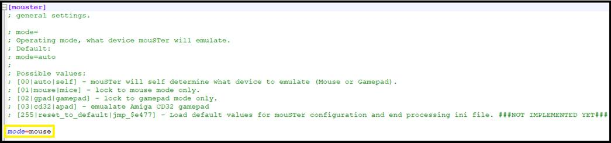
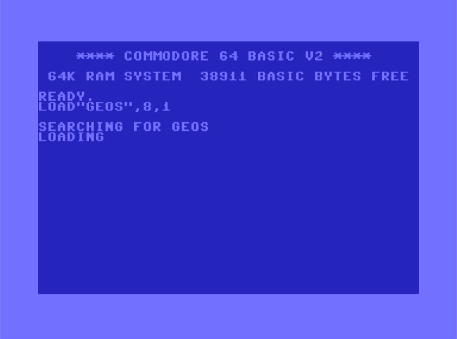
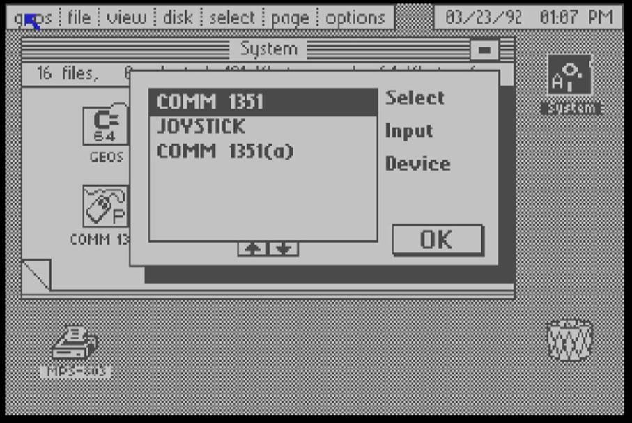
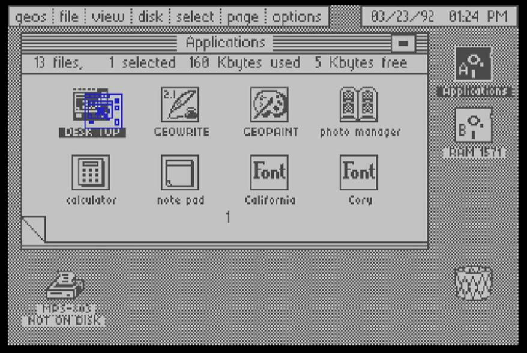
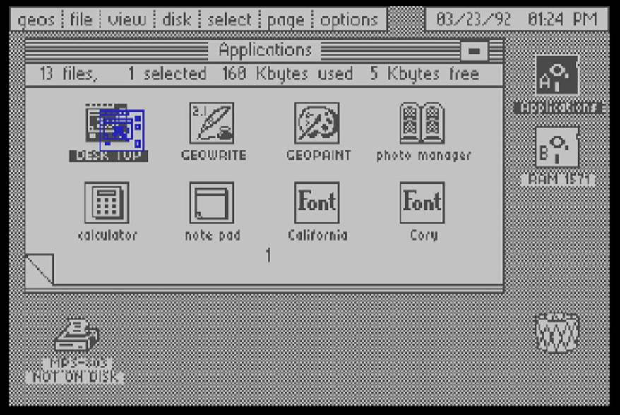
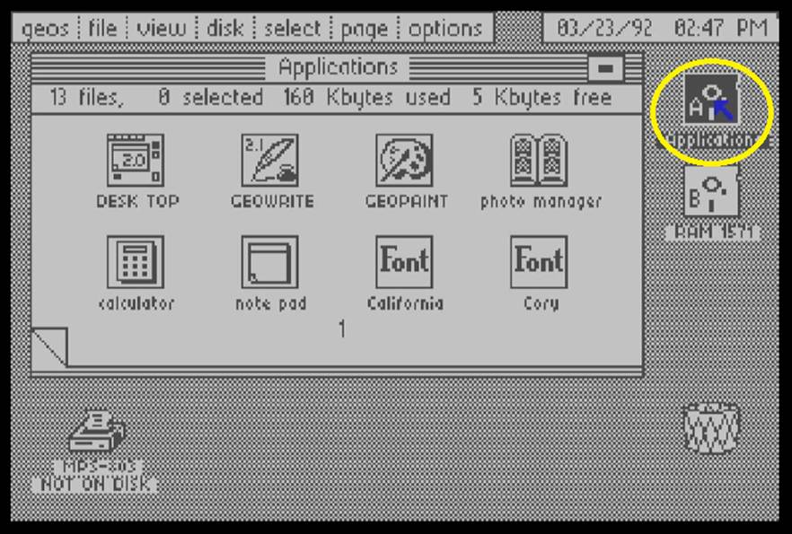
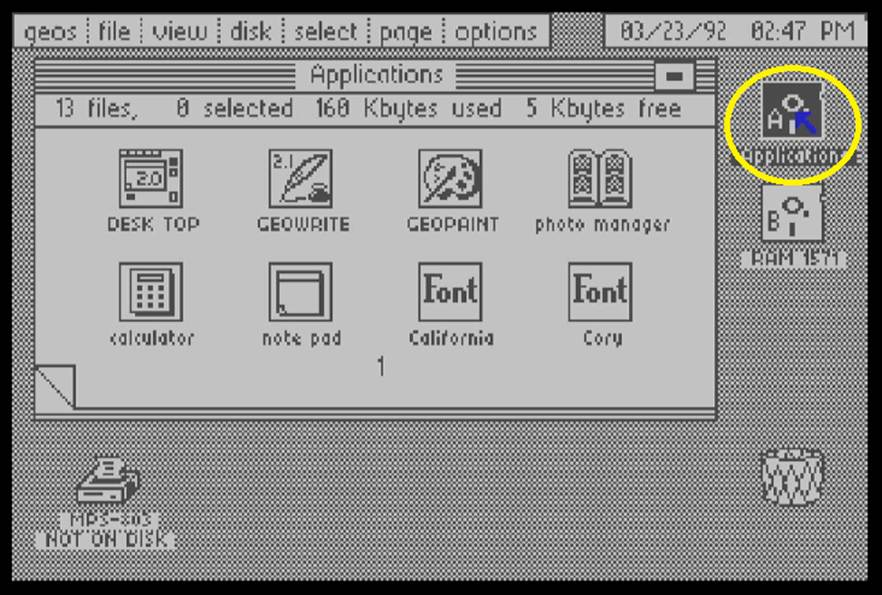

GEOS on the MEGA65 C64 Core
This document describes the very basic steps required to run GEOS on the MEGA65 c64 core.
For an exhaustive description and resources about GEOS, visit https://www.lyonlabs.org/commodore/onrequest/geos/index.html
For video resources about using GEOS and other retro stuff, visit https://www.youtube.com/@MyDeveloperThoughts
Pre-Requistes
In the Mega65 configuration, ensure the joystick mouse mode is configured as

Connect a Mouse or a Joystick on Port 1
If using a mouSTer adapter, ensure it is configured as a “C64” mouse. In the .ini file, you should have:

For an exhaustive description of the mouSTer adapter, refer to this youtube video : https://youtu.be/L8rbam3OjGY?si=j_sLrAJJI2a0sDCz
Files needed
Copy the following files to the “c64”directory of your SD card:
GEOS64.D64APPS64.D64GEOCALC.D64SPELL64.D64WD-CALC.D64WD-PAINT.D64WD-WRITE.D64WRUTIL64.D64
If you do not have your own version of GEOS, a tested version is available here.
You also need an empty D64 file to save data to. You can use this file: empty.d64. Of course you can rename this on your PC to any other name.d64. Remember that the Core currently can not create .d64 files for you, they need to be present on the SD Card. See also here.
After starting the C64 Core
- Enter Menu: HELP
- Ensure the virtual REU is enabled:
Simulate 1750 REU 512KB - Ensure JiffyDos is not enabled:
Kernal: Standard

- Mount geos64.d64

- Load main GEOS program by typing
LOAD "GEOS",8,1and Return. This will load and start GEOS desktop automatically.

Configuring the Pointer
Press MEGA + I to display the device selector.
When no device has been selected yet, use four Cursor-Keys move the blue arrow.
To use a mouse, move the arrow to COMM 1351 and press Return, then move the arrow to OK and again press Return.
The mouse is now configured and ready to be used.
To use a mouse, move the arrow to JOYSTICK and press Return, then move the arrow to OK and again press Return.

The Joystick is now configured and ready to be used. At any time you can re-configure the device with MEGA + I.
Configuring the REU
Initialize the REU virtual drive with MEGA + Left Shift + B

We now have a REU ram drive called “RAM 1571” and we are going to copy the applications to it.
Copying Applications to REU
Mount the disk called apps64.d64
Move the mouse pointer on to the System disk, left click on the system disk, it will switch to the Applications disk.


Left click once on DESK TOPto select it, then click again and a blue copy of the desktop icon is highlighted.
 
Drag the blue icon on to RAM 1571, then left click to trigger the copy to the REU.

Please wait until the Drive LED of the MEGA65 stops flashing. Then proceed the exact same way to copy GEOWRITE and GEOPAINT to the RAM 1571 drive.
Copying Applications back to an empty disk
While you can use your applications on the REU drive, it’s content will be lost when you leave the C64 Core or turn off the MEGA65. In order to save your work, please mount an empty disk and copy the needed applications back to that disk.
Mount the empty.d64 disk.
Left click on the Applications disk, GEOS discovers the empty disk and ask to confirm that you want to convert it to GEOS format.
 
Left click on YES. We now have an empty disk on which we are going to copy the content from REU drive. Left click on RAM 1571 drive B to access its content.
Copy all applications to the Disk A by dragging their icons onto it.
Left click again on Disk A, then double click GEOWRITE to start it.
Left click on “CREATE” to create a new document, enter a name and then press Return.


Type some text, then left click on File Update to commit your edit to the file on disk.
Left click on File Quit to exit GEOWRITE.
You can now either start Geowrite again or click on the document that appeared on the disk.
The same principles apply to Geopaint. For Geocalc you first need to copy the application from the geocalc.d64 disk to the REU and then to an empty disk.